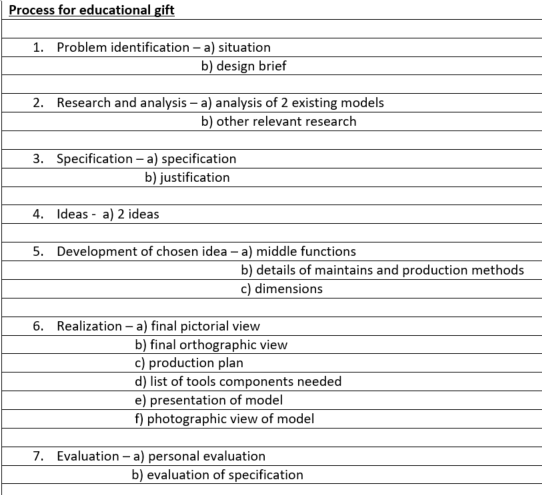
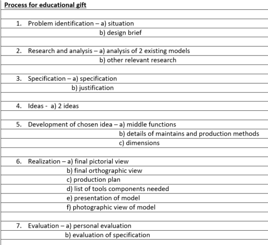

This design project need student to create an education gift that is based on the museum for kids to develope their knowledge and have fun.
criteria need to be respected and followed.
 

The first stage of the process is Problem identification which also include a situation and design brief. Problem identification involve the gathering of important details which is related to the museums that you need to choose. For the situation part you need a scenario which can be either created or taken from other real world example. In the design brief section you need to give a short descriptive summary of how you came to a solution oriented.
The process research and analysis need student to search for diffirent details on how the museums were created and what they are based on, and you need to do the same for different toys. The museums can be outsourced or locally represented.
For the 3rd stage of the process is called specification this is where you need to provide essential details about how the design of the educational gift you want it to be, also need to provide with its justifications this mean you need to give reason why its this way. also make sure that your work is original otherwise it will not count as a valid assignment.
In the stage analysis of exsisting idea you need to research on educational gift, how the instruction of the game work, for what type age this game is recommened to. Its essential to include details on different feature for example its functions , safety , environmental aspect , aesthetic aspect , positive attributes and negative attributes.
Development of chosen idea this is where we are going to focus on how to create idea and develope them with a full function educational game. Need to follow closely the specification with its justification. which had been already given above.
Realization stage is where we presernt the complete educational gift in different view such as front view, orthographic view and isometric View. And need to add dimention of the educational gift including list of components. Then there is the planning production which is where we list all the step we took with the pictures in order to creat an educational gift.
For the evaluation stage it is divide into 3 parts which are personal evaluation, user evaluation and expert evaluation. 1st personal evaluation revolves around the purpose of the educational gift, if the specification and its justification has been respected this will be verified by the creator itself. 2nd user evaluation is where we take output of the common user and list down all that need to be improved later on. 3rd part is reffered to the expert evaluation it involves around accessing of the education gift by a higher level for example a teacher, rector ,principle or administrative peoples.
Here is the final look at the educational gift. Its was created with material such as cardboard for the monopoly game board and the hexagonal box. For the tokens i created 2 different models one was constructed using clay and the other was made out of plastic fillament using a 3D printer. Concerning the drawing i did the diagram using freehand, pencil and software like gimp also normal coloring ink printer has been used.